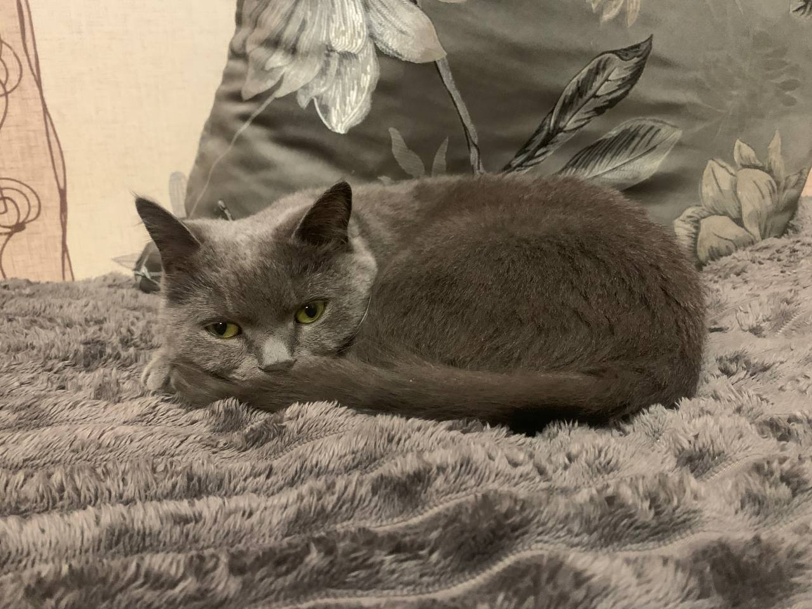

Інтелект котів певної породи

Британські висловухі коти (часто маються на увазі шотландські висловухі — Scottisch Fold) вирізняються високим інтелектом, допитливістю та здатністю швидко адаптуватися.
Види інтелектів
- Самостійність:
- Це «інтроверти» серед котів, які чудово переносять самотність, поки господар на роботі
- Навчання:
- Легко запам'ятовують правила дому, місце розташування туалету та дряпки.
- Спокій:
- Рідко нявкають без потреби, не схильні до мстивості чи зайвої агресії.
- Допитливість:
- Вміють розважати себе самі, цікавляться іграшками, але швидко втомлюються від галасу.